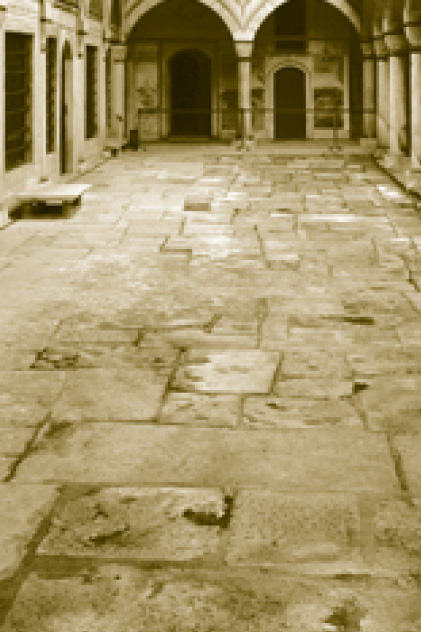
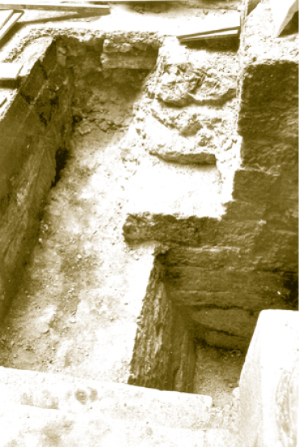

HAREM
Sultan Orhan Gazi’nin Bizans imparatorunun kızı Halofera (Nilüfer) ile evlenmesinden beri hanedana devamlı yabancı gelin geldiği bilinir. Dünyada yabancı prenseslere karışmayan hükümdar hanedanı olur mu? Üstelik yabancı ananın bir kimlik sorunu hâline gelmesi Türkiye’de yeni bir eğilimdir. Osmanlı dönemi kuşaklarında dahi karışık evlilik, Türklük konusunda tartışma çıktığı vâki değildir. Osmanlı Sarayı’nda ve kapıkulu ocaklarında devşirme erkek çocuk ve kızlar Türk dili ve İslâm kültürüne göre yetiştirilirdi. Ukraynalı Roksolana, Hürrem oldu ve birkaç yıl içinde şiir yazacak kadar güzel Türkçe öğrendi. Gerçekler, hanedanın herkesten çok Türklük gayreti içinde olduğunu gösteriyor. 1924’ten beri dışarıda sürgünde büyüyen, okuyan ve yurda giremeyen hanedan üyelerinin çok yakın zamana kadar Türkçeyi mükemmelen muhafaza ettiğini, Türkiye tarihini ve âdetlerini öğrendiklerini görüyoruz. Bu, saray eğitiminin güzel bir misali ve etkili bir kalıtımıdır.
Haremin Manası
Harem; Arapçada yasak ve gizli anlamındadır. Mahrem bundan türer; çoğumuzun avami bir yanlış olarak düşündüğü “selamlık” karşıtı “haremlik” sözü de bu anlamda doğrudur; hatta Yemen gibi ülkelerde de kullanılmaktadır. Çok kişinin sandığının aksine Harem, Şark Müslümanlarına has bir kurum değildir; üniversaldir. Yani zamanlara ve mekânlara yayılmıştır. Harem gibi uygulamaların görülmediği milletlerin ve hükümdarların da kadına daha saygılı oldukları söylenemez.
Topkapı Sarayı’nın en çok duyulan, konuşulan, en çok ama en yanlış bilinen yeridir. Sarayın ve bütün devlet protokolünün en başta gelen bölümüdür; çünkü padişahın evidir ve padişah evinin başında da “valide sultan” yer alır.
Harem, insan hayatının gizli ve kapalı bölümünü, evinin en dokunulmaz bölümünü ifade eder. Sanıldığının aksine sadece Ortadoğu Müslüman dünyasında değil; Çin, Hind, Bizans, eski İran ve hatta Rönesans İtalya’sında, Toskana’da, Floransa’nın Patrici saraylarında bile ailenin dışa kapanık bir bölümü vardı. Burada cariye de bulunur ve üst sınıf kadınları ve genç kızları dışa kapalı yaşardı. Osmanlı Sarayı’nda Harem bir kurumdur.
Harem, Jean-Baptise Hilair, 1822, Louvre Müzesi
Harem’de Eğitim
Harem’de yetişen kızların bir kısmı sarayın Enderun kısmında yetişen genç devlet adamlarıyla evlendirilirler. Hatta padişahın kız kardeşleri ile kızları da münasip devlet adamlarıyla evlendirilmişti. 16. asra kadar Osmanlı hanedanı yabancı (Müslüman veya gayrimüslim) kadınlardan evlendiği hâlde, bu yüzyıldan sonra yerli ve yabancı hanedanlardan ne kız alınır ne de verilirdi. Bu durumda Harem bir manada kızların, Enderun’da yetiştirilen yönetici sınıf için eğitildiği bir yerdir. Çünkü Harem mensupları sadece padişahın eşleri veya müstefrişesi (gözdesi) olsun diye değil, bir ölçekte kısmetini iyi kapılarda, daha başka yerlerde bulsunlar diye yetiştirilen ve bir yerde devşirilen, satın alınan kızlardır. Harem’deki bütün kızlar padişah için toplanmış değildir. Orada padişahın beğeneceği öncelikli özelliklere sahip bazı kızlar hizmetli olarak kalır ve asıl önemlisi buradaki Türkçeyi ve İslâm’ı öğrenen ve Osmanlı saray medeniyetini benimseyenlerin bir kısmı Birun’a çıkan Enderun halkıyla evlendirilir. Dolayısıyla bir kan aristokrasisi, bir hukukî hükümranlık statüsü tespit edilmediği hâlde, Osmanlı cemiyeti de insanların genel kuralı dışında kalmamaktadır. Orada da insanların tecvizi (evlendirilmesi) yoluyla bir seçkin sınıf oluşturulmaktadır. Bu seçkin sınıf mensupları eli ayağı tuttuğu, aklı irfanı yettiği sürece hükümdarın yanında devletin yönetimini götürmektedir. Bunu beceremediği takdirde derhâl o sınıfın dışına itilir. Zaten hukukî imtiyazı olan zümre değildir.
Harem’e Hırvat, Yunan, Rus, Ukraynalı, Gürcü kızlar alınır. İtalyan ve Fransız asıllılar da vardı. Ermeni ve özellikle Yahudilerden şehir halkı oldukları için ne Harem’e kız alınır ne de kapıkulu ocaklarına asker devşirilir. Müslüman halklardan Harem’e kız alınması istisna denecek kadar az sayıdadır. Tabii her kurumda olduğu gibi oradaki insanların da talihleri birbirinden farklıdır.
Valide Sultanlar ve Hasekiler
Harem’in başında hükümdar annesi ve böylece valide sultan olanlar bulunur; Hatice Turhan Sultan (IV. Mehmed’in annesi); devrinde halk tarafından, günümüzde tarihçilerce sevilen bir valide sultandır. Kösem Sultan ise aksine meşum bir validedir ama öldürüldüğü gün, İstanbul’da bir sürü insan aç ve bir sürü gelin adayı fakir kız, çeyizsiz kalmıştır.
Hasekilerin içinde Gülnuş Sultan gibi uzun, mutlu hayat sürenler vardı. IV. Mehmed’in yanından ayırmadığı sevgili hasekisiydi: II. Mustafa ve III. Ahmed’in annesi olduğundan uzun süre valide sultan oldu. Halk onu severdi; Üsküdar’daki Osmanlı baroku diyebileceğimiz hoş camii o yaptırdı, kabri de oradadır ve isminden dolayı daima bu açık türbesinde bir gül fidanı dikilidir ama iki oğlu da kocası da tahttan indirilmiştir. Gülnuş Sultan gibi hükümdar oğullarının ve eşinin kötü talihini birlikte yaşayan haseki ve valide sultanlar vardır.Sultan Abdülaziz’in annesi Pertevniyal Valide Sultan’ı hatırlayalım. Oğlu ve kocası ölen haseki ve valideler Eski Saray’a taşınmak zorundaydı; bu, hazin bir olaydı.
Harem’e girip, eğitilip, iyi evlilikle dışarı çıkanlar vardı. Nihayet sıradan adamlarla evlendirilenler de olurdu; bunların da bir devlet veya vakıf görevlisi olması gerekirdi ama kısmeti çıkmayan, orada kalan hizmetliler de vardı. Bunlar bazen Kethüda Def-i Gam Hatun gibi yüksek rütbeye ulaşır (hazinedar ustalar), bazısı ise basit işlerde, hatta temizlik işlerinde çalışırdı. Kızlar önce Türkçe, ardından Kur’an ve okuma yazma öğrenirlerdi. Musiki, raks, ince sanatlar vb. konularda dersler alırlardı. Mutlaka saray protokolü, etiketi ve adabı öğrenirlerdi. Dinî bilgiler, ama daha çok usul adap dersi verilerek saraydan çıkarılıp evlenen bir hanım bu nedenle oturduğu semtte “saraylı hanım” olarak bilinir; görgü ve davranışlarıyla etrafta saygı görürdü. Bir mahallede saray terbiyesi almış bir hanımın bulunması, o mahallenin saray terbiyesi ve saray Türkçesini öğrenmesi için yeterliydi. Bu hanımların yanlarında bulunanlar bu güzel adap ve erkânı nesiller boyu sürdürmüşlerdir.
Harem’de siyaset ve entrika, uzun tarihin kısa bir dönemine mahsustur. Kösem Sultan’ın bir saray darbesinde öldürülmesinden sonra Harem tekrar eski sakin hayatına döndü. Venedikli Bafo (Nurbanu veya Safiye Sultan), Hürrem Sultan, Kösem Sultan siyasi entrikalarla birlikte anılan isimlerdi. Hatice Turhan ve gelini Gülnuş Emetullah ise politikadan uzak durmuştur.
Hiç şüphesiz kara hadımağaları, Harem’in en trajik tipleridir. Bunların reisi Darü’s saade ağasıydı ve yüksek rütbeli bir görevliydi. Harem’e zenci hadımların alınması 19. yüzyıl sonlarında terk edilmiş bir âdetti. Buna rağmen Cumhuriyet yılları boyunca da İstanbul’da harem ağalarına eski dönemden kalan adamlar olarak belirli muhitlerde rastlanırdı.
Harem için ne yazılsa boş; gerçekler o kadar ilginç değil, herkes erotik muhayyilesini yazılmış görmeyi tercih ediyor gibi. İngiltere’nin ihtilalleri malum, boynu vurulan kralları ve saray hayatını hatırlayalım; hele Fransa malum; bu iki ülkedeki saraylar, eğlence ve muaşakada Osmanlı Harem’iyle mukayese kabul etmez. Harem’i konu edinen filmler ve kaleme alınan ve çok satan ikinci sınıf romanlar hep tartışma meydana getirmiştir. Herkesin az ya da çok söz sarf ettiği Harem de doğru değerlendirilmeyen, çarpıtılan konuların başında geliyor. Halk arasında ağzını yaya yaya Harem’den bahseden insanların burada yaşanan çetin hayatı, ama aynı zamanda buradaki yetenekli ve zeki kadınların meydana getirdiği kültürel ortamı tanıyıp anlamadıkları ve tarihteki bir topluluğu bilir bilmez hafife aldıkları çok açıktır.
Harem özgür, bir eğlencelik alan değildir, her şeyden önce bir evdir. Hiç değilse her ailenin evi kadar saygı gösterilmesi gerekir.
Eski Çin’de, Hind’de, İran’da ve Bizans’ta, hatta Floransa senyörlerinin saraylarında harem ağası da cariye de vardır. Osmanlı bu kurumun en son bilinen örneğidir. Bugün belki bazı petrol zenginlerinin saraylarında kadın kalabalığı olabilir; ama bu gelenekle ilgisi olmayan bir bid’attır, yani sapmadır.
15. yüzyıl sonuna kadar Osmanlı padişahları çok eşli evlilik yapsalar da komşu hükümdarların kızları tercih edilirdi. Orhan Gazi, Kantakuzinos’un kızı Prenses Holofera, I. Murad ise İmparator Emmanuel’in kızı ile evlendi. Yıldırım Bayezid Han ise Kütahya Germiyan hükümdarı Süleyman Şah’ın kızı, sonra bir Bizans prensesi ve sonra Sırp despotunun kızlarından biri ve nihayet Aydınoğlu İsa Bey’in kızı Hafsa Hatun ile evlendi. II. Bayezid Han’ın annesi Dulkadiroğlu hanedanından Sitti Hatun’dur. Buradan evliliklerin bazı stratejik maksatlar taşıdığı anlaşılmaktadır.
Son yıllarda seceresi tartışılmakla birlikte, hanedandaki en son mavi kanlı prenses; Yavuz Sultan Selim Han’ın eşi ve Kanuni Sultan Süleyman Han’ın validesi, Kırım Hanı Mengli Giray Han’ın kızı Hafsa Hatun’dur.
Hürrem Sultan
Osmanlı hanedanının büyük annesi Hürrem Sultan, çocukları tahta çıkmadan vefat ettiği hâlde Kanuni Sultan Süleyman tarafından “sultan” unvanı verilen, Avrupalıların Roksolana dediği Ukraynalı zeki ve güzel bir kızdı. Hanedanın 17. yüzyıldaki bir büyükannesi de yine Ukraynalı olan Hatice Turhan Sultan’dır. I. İbrahim’in eşidir. IV. Mehmed’in annesidir. Anlaşılan hanedanımız Türk-Ukrayna karmasıdır. Güzelliği ve zekâsıyla öne çıkanlar “valide sultanlık”a kadar yükselebilirdi.
Saraya gelen cariyeler, ya Kırım Hanlığı atlılarının Ukrayna ve Polonya ovalarından toplayıp getirdiği esireler ya da Azak ve Kefe Sancak Beyi gibi görevlilerin satın alıp hediye ettikleri veya Akdeniz’deki Cezayir korsanlarının ele geçirdikleri güzellerdir. Venedik soylusu Bafo ailesinin kızı Nurbanu veya Safiye Sultan da bunlardandır. Bunlardan başka Kafkasya veya Akdeniz adalarındaki, Balkan dağlarındaki fakir fukaranın, canları kurtulsun diye saraya gönderdiği veya esirciye verdiği genç kızlar Harem’e gelirdi.
19. yüzyılda durum çok değişti. Daha çok hanedana ve halifeye bağlılık duygusu ile Çerkes veya Abhaz aileleri, hem de soylu kesimi, hanedana gelin verircesine kızlarını saraya gönderirlerdi. Örnek vermek gerekirse II. Abdülhamid Han’ın dördüncü kadını ve Ayşe Sultan’ın annesi Müşfika Kadınefendi, Abhaz beylerinden Ağır Mustafa Bey’in kızıydı.
Levni’nin çizimi ile Osmanlı kadını
Her topluluk gibi Harem’de de eşitsizlik vardı. Bu doğaldır. Güzelliği ve zekâsıyla temayüz edenler padişah gözdesi, ikbal ve giderek şehzade veya sultan annesi haseki olur, hatta günün birinde valide sultanlığa ulaşırdı. Hiç belli olmaz, kocası padişah ölüp de eski saraya gönderilmiş bir hasekinin, günün birinde oğlu padişah olunca Bayezid’den Topkapı’ya her karakol menzilinde yeniçeri kollukları tarafından ihtiramla selamlanıp sarayda padişah tarafından eli öpülerek valide makamına ulaşması da mümkündü.
Sarayın Enderun’daki gençlerini Birun’a çıkması yani idarede görevlendirilmeleri gibi Harem halkı da kimi zaman saraylılarla veya diğer görevlilerle evlendirilirlerdi. Harem’in kapısındaki “Hayırlı kapılar açan Allah’ım bize de hayırlı kapılar aç.” ibaresi bunu gösterir.
Osmanlı Sarayı, okuma yazma oranının hayli yüksek olduğu bir yerdir. Bazı cariyelerin, hizmetinde bulundukları şehzadeler kadar hatta daha düzgün bir imlası vardı.
Saray protokolünün o çağın Avrupa saraylarıyla benzeşmesi kaçınılmazdı. XIX. yüzyılda Osmanlı Sarayı bazı Avrupa monarklarının, Balkan devletlerinin imtiyazlı prenslerinin (Bulgaristan gibi) ziyaretine şahit oluyordu. Saray beynelmilel diplomasi sistemini, Viyana diplomatik temsil hükümlerini tanıyan bir devletin merkezî birimidir. Bu protokoler ilişkilerde Harem-i Hümâyûn’un yeri de eskisinden farklıdır. Bu birimde de sultan hanımlarının, kadınefendilerin eğitimi ve günlük hayatı değişmektedir. Bu değişimde dışarıdaki cemiyetin zorlayıcı etkisi de hissedilmeye başlamıştır. II. Meşrutiyet döneminde gerek yabancı sefarethâneler gerekse Mısırlı prenslerin konakları ve bazı devlet adamlarının resepsiyon ve suarelerinde devlet erkânının eşleri de yer aldığı hâlde, saraylılar için aynı durum söz konusu değildir. İmparatorluğun son yarım asrında Fransa İmparatoriçesi Eugenie, III. Napolyon’u temsilen iâde-i ziyarette bulunmuş, Alman Kayzeri Wilhelm üç defa gelmiş (ve birinde imparatoriçe ile) Büyük Savaş sırasında, Avusturya-Macaristan İmparatoru Karl, İmparatoriçe Zita ile ziyarete geldiği hâlde merasimlerde ve karşılama, uğurlamalarda padişah veliahtla hazır bulunmuştur. Resepsiyonlarda kadınefendilerin hiçbiri görülmez. Ancak gelen ziyaretçi imparatoriçeler Harem-i Hümâyûn’da valide sultan ve kadınefendileri ziyaret etmiş, onlar da imparatoriçelere, ikamete ayrılan Beylerbeyi Sarayı’nda iâde-i ziyaret etmişlerdir. Bu, hanedanın kadın üyelerinin devlet protokolünde yer almalarını sağlayan bir gelişmedir ve içlerinde Garp dilleri ve kültürüne aşina olanların sayıları artmaktadır.
Harem Mekânları
Topkapı Sarayı’nda Harem, Divan Meydanı’nın solunda Kubbealtı’nın arka kısmında Topkapı Sarayı’nın Haliç’e ve Boğaz’a bakan çarpıcı güzellikteki manzaraya sahip yeridir. Çeşitli odalar, sofalar, koridorlar, daireler, çeşmeler, taşlıklar gibi onlarca bina türüne sahip olan Harem’de rehbersiz dolaşan bir insanın kaybolması çok kolaydır.
Araba Kapısı
Günümüzde Harem’i gezecek ziyaretçilerin gruplar hâlinde alındığı bu Araba Kapısı, Harem’in dışa açılan kapısıdır. Araba Kapısı ikinci avluda Kubbealtı ile Zülüflü Baltacılar Koğuşu Kapısı’nın arasında yer almaktadır. Harem’de oturan bütün kadınlar buradan araba ile girip çıktıkları için bu adı almıştır. Osmanlı’da kadınların araba dışında tek başlarına sarayda ata binmeleri veya yürüyerek buradan çıkmaları mümkün değildir. Araba ile giderken de yanlarında bir harem ağasının refakati Harem nizamnâmesinde yer alırdı.
Kapı muhafızlığını Darü’s saade ağası ile kara ağalarının yaptığı kapıyı aynı zamanda Harem’e ziyarete gelenler de kullanırlardı. Bir dönem Harem’de kaldıktan sonra devlet ileri gelenleri ile evlenen hanımlar, zaman zaman Harem’de haseki veya valide sultan ve kapıyoldaşlarını ziyaret ederlerdi. Bunlar dışında, hastalananlara bakan hekimler ve ders vermeye gelen hocalar da bu kapıdan Harem’e girerlerdi. Araba Kapısı’ndan asıl Harem Kapısı’na kadar olan kısım iki kapı ve üç bölümden ibaret bir giriştir. Araba Kapısı aslında bu girişin kapısı sayılmaktadır.
Vefat eden padişahların aileleri Topkapı Sarayı’ndan Eski Saray’a nakledilirlerdi. Tahta yeni çıkan padişahların aileleri de Eski Saray’dan Harem’e taşınırlardı. Padişahın annesi, Valide Alayı ile saraya gelir ve sarayın ilk avlusunda günümüzde bulunmayan Has furun önünde padişah, validesini karşılar ve Araba Kapısı’na gelinceye kadar eşlik ederlerdi. Valide sultan, Darü’s saade ağasının refakatinde Araba Kapısı’ndan içeri girer ve oradan Harem’e ulaşarak dairesine yerleşirdi. Padişah anneleri için valide sultan tabirinin kullanımı 16. yüzyılda Kanûni’nin annesi Hafsa Sultan’dan itibaren yerleşmiştir. Osmanlı tarihinde otuz altı Osmanlı padişahından yirmi üçünün annesine valide sultan unvanını almak ve oğullarının Devlet-i Aliyye’nin tahtında oturduğunu görmek nasip olmuştur. On üç tane padişahın annesi ise oğulları tahta geçmeden önce vefat etmiştir.
Araba Kapısı’nın söveleri mermerden ve kapı kanatları demirdendir. Kapının etrafı çini ile kaplanmış iken zaman içinde bu çinilerin bazı parçaları düşmüş, kırılmış veya kaybolmuştur. Yok olanların yerleri başka çinilerle doldurulmuşsa da eski güzellik ve kompozisyon bozulmuştur.
Kapının kemerindeki “Güzin-i padişâhân Han Murad-ı âlişân” ifadesiyle başlayan kitabeden kapının 996/1587’de Sultan III. Murad zamanında yapıldığı anlaşılmaktadır.
III. Murad, Osmanlı tarihinde hacimce en uzun olan divanın sahibi bir padişahtır. Giyim zevkini bugün saraydaki kumaş ve elbise koleksiyonlarından da tespit etmek mümkündür. Fakat döneminde Osmanlı Sarayı’nda ve idaresinde önemli bir tebeddülat görülmüştür. Babasının zamanında da görev yapan Osmanlı tarihinin ünlü sadrazamı Sokullu Mehmed Paşa, onun döneminde bugün bir tertip olduğu düşünülen suikastla ortadan kaldırılmıştır. Eşi Safiye Sultan’ın ise kendisi üzerinde çok büyük bir nüfuzu olduğu bilinmektedir.
Kapının iç tarafında tahta levha üzerinde güzel bir besmele ile birlikte şu yazı bulunmaktadır: “Medine-i Münevvere’de Hazret-i Peygamberin Ravza-i Mutahhara ve hücrelerinin pencerelerinin sallarıdır.”
Surre Alayı ile birlikte giden Mahmil-i Şerif’in örtüsü
Dolaplı Kubbe
Araba Kapısı’ndan girildiğinde karşılaşılan kubbeli hole Dolap Kubbesi veya Dolaplı Kubbe denilir. Dört tarafında bulunan dolaplar sebebiyle bu adı aldığı da söylenir. Burada bulunan dolaplardan ikisine Harem için yapılan alışveriş sonucunda getirilen malzemeler, diğerlerine de Darü’s Saade ağası nezaretindeki Haremeyn Evkafı’na ait vakıf kayıtları ile her yıl Hicaz’a gönderilen surreler (para dolu keseler) konulurdu. Dolaplı Kubbe, bu şekilde Darü’s saade ağasının dairesi ve Haremeyn vakıfları hazine-i evrakı (arşivi) gibi iş görmüştür. Dolaplarda Mukaddes Topraklara hac kervanı ile birlikte gönderilecek surre keseleri saklandığı için bu dolapları kimse açmaz ve dokunmazdı.
Dolaplı Kubbe’yi Şadırvanlı Sofa’ya bağlayan dökme tunçtan ve sanatlı kapının kanatlarının Mısır’dan geldiği rivayet edilir. Kapının üzerinde sarayda sıkça rastlanılan bir dua cümlesi bulunur. “Allahümme
Şadırvanlı Sofa. Bu sofaya adını veren köşedeki şadırvan bir restorasyonda kaldırılarak
III. Murad Has Odası’nın altındaki havuza konulmuştur. Bkz.: Yandaki resim
Yâ müfettiha’l Ebvâb! İftah lenâ hayra’l-bâb./Ey kapalı kapıları açan Allah’ım! Bizlere hayırlı kapılar aç.” Bu dua ifadesi Harem’deki daha pek çok kapıda yer almaktadır.
Şadırvanlı Sofa (Şadırvanlı Taşlık)
Dolaplı Kubbe’den girilen dikdörtgen planlı sofa, adını köşesindeki taş şadırvandan alır. Ancak bu şadırvan, yapılan restorasyonların birinde buradan kaldırılarak III. Murad Has Odası’na (Havuzlu Köşk) konulmuştur. Şadırvanlı Sofa “Kara Ağaların Nöbet Mahalli” olarak da bilinir. Büyük Biniş, Perde Kapısı, Kara Ağalar Mescidi ve Adalet Kulesi bu mekâna bağlanır. Tonozlu bölümün üst katında Başkapu Gulamı’na bağlı hadımların odaları vardır. Duvarları 17. yüzyıl çinileriyle kaplı olan sofada çini kitabeler üzerinde Esma-i Hüsna (Allah’ın yüce isimleri), Hz. Peygamber’in ismi ve Aşere-i Mübeşşere (Hayatta iken Cennet’le
III. Murad Has Odası’nın altındaki havuzda bulunan şadırvan
müjdelenen on sahabenin adları) yazılı kitabeler görülür. Duvarlarındaki enli yazı kuşağında ise Arapça olarak Sultan IV. Mehmed’i İslâm’ın ve Müslümanların koruyucusu, sultanların ve hakanların en büyüğü, Mekke ve Medine’nin hizmetkârı, karaların ve denizlerin hükümdarı sultan torunu sultan oğlu, sultan İbrahim Han oğlu Sultan Gazi Mehmed Han olarak anlatan ve saltanatının ebediyen sürmesi için yapılan dua ibarelerini Türkçe ifadeler takip eder. Türkçe kısmında ise Harem’in büyük ölçüde Sultan IV. Mehmed tarafından yaptırıldığını anlatan bir cümle vardır. Sofanın Kule Kapısı üzerinde “Bir saat adaletle hükmetmek, yetmiş sene nafile ibadetten hayırlıdır.” mealinde bir hadis hâkkedilmiştir.
Biniş Yolu ve Perde Kapısı
Şadırvanlı Sofa’da Adalet Kulesi’nin kapısının karşısında bulunan Perde Kapı, Biniş Yolu’na açılmaktadır. Fatih döneminden kalan bu rampanın bir yanında Zülüflü Baltacılar Koğuşu, diğer tarafında Kara Ağalar Hamamı ile Başkapı Gulamı Dairesi (Meşkhâne) yer alır. Raht Hazinesi iken daha sonra Baltacılar Mescidi’ne dönüştürülen mescit de bu yola açılır. Biniş Yolu, padişahlara mahsus bir yoldur. Bir saray geleneği olarak padişahların cülûs merasiminden sonra Eyüp Sultan’da kılıç kuşanmaya giderken bu yolu kullandıkları bilinir. Kılıç kuşanmaya giderken Şal Kapısı’ndan Taht Kapısı’na (Valide Sultan Taşlığı’ndadır) kadar kırmızı şallar döşenirdi ki bugün Arkeoloji Müzesi’nin arkasındaki Şal Kapısı adını bundan alır. Yine padişah tebdil-i kıyafetle halk içinde dolaşmak için ve Çinili Köşk’e gideceği zaman da bu yolu kullanır. Yol, alt kesiminde kıvrılarak Şal Kapısı’yla Çinili Köşk meydanına ve şimdiki Arkeoloji Müzesi’nin bulunduğu yere bağlanır.
Şadırvanlı Sofa’dan Biniş Yolu’na geçilen Perde Kapısı’nın üzerinde “Allah size insanlar arasında hükmettiğiniz zaman adaletle hükmetmenizi emreder. Allah size ne kadar güzel öğütler veriyor. Şüphesiz Allah her şeyi işitici, her şeyi görücüdür.” (Nisâ Sûresi, 58) mealindeki ayet-i kerime yer almaktadır.
Başkapı Gulamı Dairesi, ortada ana kubbesi ve yanlarda tekne tonozlu örtüsüyle 17. yüzyıl Osmanlı mimarisinin tipik örneklerinden birini gösterir. Daire konumu itibariyle padişahların giriş çıkış yolunu denetleyen bir mekândır.
Kara Ağalar Mescidi (Atik Ağavat Mescidi)
Şadırvanlı Sofa’nın solunda yer alır. Perde Kapısı’nın yanındaki kapıdan önce uzunca bir koridora ve buradan da yine bir kapı ile Kara Ağalar Mescidi’ne girilir. Mescid, Şadırvanlı Sofa’ya tonozlu bir koridorla bağlıdır. Diğer köşesinden Kara Ağalar Taşlığı’ndaki revaka açılır. Kapının iç tarafında mermer üzerine “Şefaat yâ Resûlallah yâ Habiballah” yazısı, karşı kapı üzerinde ise “Ya Rabbî bizi ateşten/Cehennem’den koru ve Cennet’ine dâhil eyle.” mealindeki dua kitabesi vardır.
Mescidin bütün duvarları hiçbir boşluk bırakmadan çinilerle kaplıdır. Mihrap çinilerinde Haremeyn’i sembolize eden Mekke, Kâbe, Arafat, Makam-ı Hanefi ve Medine’yi simgeleyen resimler bulunur.
Tavan eteklerinde çeşitli ayet-i kerimeler yazılıdır. Mescidin sedef kakmalı kürsüsünü Lale Devri’nin meşhur devlet adamı Sadrazam Nevşehirli İbrahim Paşa yaptırmıştır.
Adalet Kulesi’nden Harem dairelerinin ve Haliç’in 1900’lü yıllarda görünüşü
Kara Ağalar Taşlığı (Revaklı Yol)
Şadırvanlı Sofa’dan asıl Harem Kapısı’na ulaşan iki tarafı saçaklı, revaklarla kapalı uzun bir koridordur. Yolun solunda Kara Ağalar Koğuşu olması sebebiyle Kara Ağalar Taşlığı, yoldaki altı sütuna dayanan revak sebebiyle de Revaklı Yol olarak anılmıştır.
Kara Ağalar Taşlığı, Harem’in ilk taşlığı olup bu avluya kara ağaların yaşadığı birçok mekân açılır. Muhasipler, Cüceler, Hazinedar Daireleri; Kara Ağalar Koğuşu; Darüssaâde Ağası Dairesi; Şehzadeler Mektebi ve Nöbet Yeri yer almaktadır.
Yolun iki tarafındaki duvarlar çinilerle süslüdür. Avluya asıl Harem Kapısı’ndan başka Enderun avlusuna bağlanan Kuşhâne Kapısı açılır.
Musahipler, Cüceler, Hazinedar Daireleri
Kara Ağalar Taşlığı’nın sağında iki odalı Musahipler, yanında da Cüceler Dairesi yer alır. Musahipler, Harem ağaları arasında önemli bir grup idiler. Baş musahip, ikinci ve üçüncü musahipler, bizzat padişahlar tarafından tayin edilirdi ve padişahların odaları önünde nöbet tutarlar ve sultanın emirlerini Harem halkına ve divan üyelerine duyururlardı. Zarif, nüktedan ve hazır cevap kimselerdi. Padişahla sohbet ederlerdi. Musahipler Dairesi, Adalet Kasrı’na bitişik şekilde inşa edilmiştir.
Musahipler Dairesi’nin bitişiğindeki odada Harem’de çalışan, padişahı eğlendirmekle görevli cüce ağalar yaşardı.
Cüceler Dairesi’nin az ilerisinde ve yine taşlığın sağında Hazinedar Ağa Odası bulunmaktadır. Hazinedar ağa, Harem’in mali işlerini düzenlerdi.
Kara Ağalar Koğuşu
Kara ağalar (harem ağaları) Harem’in güvenliğinden sorumlu görevlilerdi. Dört dereceli bir teşkilat sistemleri olan kara ağalar; acemiler, ortancalar, hasıllılar, eskiler olarak sınıflandırılırlardı. Koğuşa yerleşmeleri de bu sınıflara uygun yapılırdı. En üstte acemiler kalırdı. Harem ağalarının en yüksek rütbelisi Darü’s saade ağasıdır (Kızlar ağası), ondan sonra da kara ağaların başı olan başkapı gulamı gelir.
Koğuş, Kara Ağalar Taşlığı’nın solunda, mescit ile Şehzadeler Mektebi arasındadır. Taş döşeli uzun bir koridor üzerinde üç kat boyunca sıralanan odalardan oluşur. Harem’in günümüze kadar özgünlüğünü korumayı başarmış nadir mekânlarından biridir. Koğuşun kapısı üzerinde; “Bütün müminler kardeştir.” (Hucurât Sûresi, 10. ayet) yazılıdır. Koridorun sonundaki süslü bir ocaktan dolayı buraya “Ocakbaşı” denilir. Bu görkemli ocak, bütün koğuş odalarına sıcaklık vermesi için tasarlanmıştır. Ocağın iç tarafına konulan su haznesi ile de kışları kara ağaların ılık suyla abdest almaları sağlanmıştır. Ocakbaşı’nın sağ tarafındaki kitabede Darü’s saade ağasının hizmet anlayışı anlatılır ve kitabe,
“….
Zühd-i takvaya belin bağlayub etdi hizmeti
Kıl şefaat yâ Muhammed ümmetindir Mustafa (h. 1099)” ifadesi ile sona erer.
Kara Ağalar Koğuşu’nun ilk katında on bir oda bulunur. Bu odalar başkapı gulamının daireleri olup sağdakiler yemek ve kiler; soldakiler başkapı gulamının selamlık, yatak ve misafir odalarıdır. Odalar eşsiz çinilerle süslüdür. Sağ taraftaki yemek odası çeşmesinin üzerinde “Ve sakahüm “Rabbühüm şaraben tahûra/ Rableri onlara pak mı pak bir içecek ikramında bulunur.” (İnsan Sûresi, 21. ayet) yazılıdır.
Koğuşun üst katları sadedir, odalarda çini ve benzeri süsler yoktur. Harem ağaları, Biniş Yolu’nun kenarındaki hamamda yıkanırlar. Koğuşun taşlığa bakan çinili odaları aslına uygun bir tarzda yenilenmiş ve teşrifatı yapılmıştır. Bu odalardan birine başkapı gulamının ve Harem ağasının mankeni konulmuştur.
Karaağalar Taşlığı’nın önündeki revakların cephe duvarlarında bulunan uzun kitabeler doğrudan Harem ile ilgili olmayıp padişahların ve Harem halkının yaptırdıkları hayır işleri ve bunlarla ilgili vakfiyelerdir.
Darüssaâde Ağası Dairesi
Kara Ağalar Koğuşu’nun sağında iki katlı kâgir bir dairedir. Dairenin ilk katında başoda, küçük bir hamam, servis odaları, kahve ocağı; üst katta ise büyük selamlık odası, yemek odası ve sair odalar mevcuttur. Üst kattaki bazı odaların ne maksatla yapıldığı bilinememektedir. Ancak üstte bulunan Kâbe tasvirli büyük çini panosu meşhurdur.
Dairenin duvarları 17. yüzyıl çinileriyle kaplıdır. Darü’s saade Ağası Dairesi’nden Şehzadeler Mektebi’ne bir merdivenle geçilebilir.
Şehzadegân Mektebi
Saray geleneğine göre dört yaşına gelen şehzade (padişahın oğulları) ve sultanların (padişahın kızları) eğitimi başlardı. Haddizatında bunun günümüze bakan tarafları da vardır. Bugün eğitime başlamak için çocuğun yedi yaşına gelmesinin beklenmesi özellikle dil eğitimi için çok geçtir. Hanedanın bu yeni üyeleri lalalarının refakatinde buraya gelirler. Osmanlı toplumunda mektebe başlayacak çocuklar için yapılan “Âmin Alayı”na benzer, bütün devlet erkânının katıldığı “Bed-i Besmele Merasimi” yapılır. Eğitimin ilk aşamaları okuma yazma, Kur’an-ı Kerim ve ilmihâl dersleridir. Dersleri Darü’s saade ağasının dışarıdan getirttiği hocalar verir. Zaten bu okuldan Darü’s saade ağası mesuldür. Bu merasimde şehzadeye ilk dersi şeyhülislâm verir ki bu ders besmelenin öğretilmesidir. Merasime Bed-i Besmele denilmesinin sebebi de budur. Şeyhülislâm ilk dersin ardından çocukların muvaffakiyeti için dua eder.
Şehzadegân Mektebi’nde meşhur Kâbe tasvirli çini pano
Darüssaâde Ağası Dairesi’nin üst tarafında olan kapısının yanındaki duvarda Kâbe resimli 17. yüzyıla ait bir çini panonun yer aldığı Şehzadegân Mektebi, aynı yüzyılda inşa edilmiş, binaya son şeklini ise 18. yüzyılda Kızlar Ağası Beşir Ağa vermiştir. Beşir Ağa zamanındaki yenilenmede barok üslubun hâkimiyeti göze çarpar. İki dikdörtgen kısımdan müteşekkil olan mektebin ilk bölümü düz sade bir tavanla, duvarları ise Kâbe resimli renkli çinilerle kaplıdır. İkinci bölümü ise ahşap kubbeyle örtülüdür ve diğerine nazaran daha süslüdür. Barok tarzı bir mermer ocağı bulunur. Kitap dolapları, nişler rokoko süslemelerinin güzel örneklerindendir. Dolapların üst kısımlarında dolanan çini şeritte Esma-i Hüsna ve Kaside-i Bürde mısraları yazılı olup Kızlar Ağası Beşir Ağa tarafından yazdırılmıştır.
Harem Giriş Kapısı (Cümle Kapısı-Saltanat Kapısı)
Cümle Kapısı, Harem bölümünü Harem ağaları bölümünden ayıran kapıdır. Harem’in asıl kapısının Kara Ağalar Taşlığı’ndan görünmesine mâni olmayı amaçlayan bir perdeleme vazifesi de görür. Bu kapı, Harem’in üç ana bölümünün bağlandığı Nöbet Yeri’ne açılır. Kubbeli ve kemerli açık bir sahanlık olarak geçiş yeri hâlindeki kapıya mermerden, celi sülüs hatla Ahzab Sûresi’nin “Ey İman edenler! Size izin verilmeden Peygamber’in evine girmeyin.” mealindeki 53. ayeti yazılıdır. Böylece Hz. Peygamber’in evine izin verilenler dışındaki kimselerin girmesinin yasak olduğuna dair ayet hatırlatılarak padişahın evine de izinsiz girmenin yanlış olduğu hatırlatılmış olmaktadır.
Cümle Kapısı’nın Darü’s saade Ağası Dairesi yüzünde Cennet bahçelerini simgeleyen çiçek ve ağaç motifleri vardır. Kuşhâne’ye açılan kapının kitabesinde “Şefaat Ya Resulallah, şefaat ya Habiballah.” yazılıdır.
Nöbet Yeri (Sekili Hol)
Nöbet Yeri, harem ağalarının yirmi dört saat nöbet tuttukları yerdir. Ayrıca Harem ağalarının Harem’de gidebilecekleri son noktadır. Burada duvarda asılı tokmak ve davul bulunurdu. Bu davul, ramazanda Harem halkını sahura kaldırmak, aynı zamanda Matbah-ı amire’den getirilen yemeklerin geldiğini haber vermek içindir. Yemekler, girişin solundaki tezgâhlara alınır, Harem ağaları davul çalarak yemeklerin geldiğini bildirir ve koridoru terk ederlerdi. Görevli cariyeler gelerek yemekleri içeri taşırlardı. Yemek yenildikten sonra tablalar temiz olarak tekrar tezgâhlara bırakılırdı.
Nöbet Yeri’nde büyük bir boy aynası ve oturma sekisi bulunur ki “Sekili Hol” denilmesinin sebebi de budur. Bu sekiye, gelen ziyaretçiler ve satıcılar oturur. Bu şekilde Nöbet Yeri bir anlamda bekleme salonu görevi görür. Nöbet Yeri’nin kalın duvarları Fatih devrinden kalmış olup sarayın ana duvarlarındandır. Bu duvarlar Divan Meydanı ile Enderun Meydanı’nı ve Harem’i birbirinden ayırır. Nöbet Yeri’nin sağındaki kapı Altınyol ile Mabeyn-i Hümâyûn’a, ortadaki kapı Valide Taşlığı’na, soldaki kapı ise Cariye Koridoru ile Cariye ve Kadınefendiler Taşlığı’na bağlanır.
Cariyeler Kapısı’nın kitabesinde Harem’de en çok rastlanılan dua bulunur: “Yâ müfettiha’l Ebvâb! İftah lenâ hayra’l-bâb./Ey kapalı kapıları açan! Bizlere hayırlı kapılar aç.”
Harem taşlığına açılan kapının kitabesinde Hud Sûresi’nin 56. ayeti “Bismillahirrahmanirrahim. İnni tevekkeltü alallahi rabbi ve rabbiküm/Şüphe yok ki ben, Rabbim ve Rabbiniz olan Allah’a tevekkül ettim.” yazılıdır. Altınyol’a açılan kapının kitabesinde de Zümer Sûresi’nin 73. ayetinin son kısımları yazılmıştır.
Nöbet yerinde bulunan nöbetçiler de ayrıca denetime tâbi tutulmuşlardır. Nöbet binasına bağlanan asma kata Kuşhâne girişi tarafındaki duvarda bulunan gizli merdiven ile çıkılabilir. Bu merdivenin karşısında Hazinedar Ağa Odası’na çıkan bir taş merdiven daha bulunur. Asma katta bulunan hazinedar ağa, nöbetçi kara ağayı gözetleyebilir. Padişahın evinin korunmasında bu derece aşırı hassasiyet gösterilmiştir.
Altınyol
Nöbet Yeri’nden Mabeyn’e (Harem-Selamlık arası) uzayan ve Has Oda Taşlığı’nda son bulan dar koridora Altınyol denilir.
Koridora Altınyol denilmesi konusunda çeşitli rivayetler bulunmakla birlikte isminin nereden geldiği tam olarak bilinmemektedir. Okunuşunda geçen altın ifadesi Osmanlılarda kıymetli maden olan “altun”un yazılışından farklıdır. Şehzadelerin Cülûs Töreni’ne giderken bu yol etrafında Harem halkına altın saçtıkları hatta doğrusu bayram günü padişahın harem halkına bir iki kese altını saçarak bu yoldan geçtiği rivayet edilir. Altınyol’un sonu Hırka-i Saadet Dairesi’ne çıkar. Bu, yaklaşık kırk beş metrelik yol, yer yer iki ila dört metre arasında genişliğe sahiptir. Zemini taş döşeli olan yolun duvarları çini ile kaplıdır. Bu yolun üstüne yeni mekân kazanmak için ahşap kat çıkıldığı görülür ki mimari bir bozulmadır.
Altınyol’un Mabeyn’e ulaşıncaya kadar olan sol tarafında Valide Taşlığı, Hasekiler Dairesi, Kıymetli Eşya Deposu ve Gözdeler Taşlığı; sağ tarafında ise Enderun avlusunun duvarına bitişik olan Kuşhâne Mutfağı ve Harem Camii bulunur. Gözdeler Taşlığı hizasında yolun üstünde Gözdeler/İkballer Dairesi bulunur.
Altınyol padişahların Hasbahçe’ye ve şehre çıkışlarını sağlar, Enderun’daki Has Odaları’nı Sofa-i Hümâyûn yoluyla Harem’e bağlar. İkiz bir kapı düzeniyle de Mabeyn Dairesi’nden Sofa-i Hümâyûn’a açılır. Kara Ağalar Taşlığı’ndan Mabeyn’e kadar uzanan Altınyol’un Harem’i sınırlayan bütün mekânları birbirine bağlayan tek geçit olduğu görülür.
Cariyeler ve Kadınefendiler Taşlığı
Cümle Kapısı Holü’nün sonunda yer alan Cariyeler ve Kadınefendiler Taşlığı 16. yüzyıl ortalarında Kara Ağalar Taşlığı ile birlikte inşa olunmuştur. Harem yangınlarından sonra yenilenmekle birlikte revakın bir bölümü kapatıldığı için özgünlüğünü yitirmiştir.
1665’teki Harem yangını Harem’in mimarisini de çok etkilemiştir. Yangından sonra yapılan inşaatlarda revaklar kapatılarak yeni odalar açılmıştır ki bu, Harem’i daha dar ve karmaşık bir yapıya dönüştürmüştür. Açık bir avlunun üç tarafı revaklarla çevrildiği Harem’in bu en küçük avlusunda kadınefendi/haseki daireleri, kiler, cariye odaları, çamaşırhane ve bir hamam bulunur. Taşlığın solunda yer alan bu hamama Cariyeler Hamamı denilir ki sarayın bilinen en eski hamamlarındandır.
Taşlığa bakan dairelerin cephelerindeki tabiat resimleri, 18. yüzyıldan kalan kayda değer eserlerdir. Sağındaki ilk üç kapıda birinci, ikinci ve üçüncü kadınefendi odaları bulunur. Dördüncü kapı Kırk Merdiven diye anılmasına karşın aslında elli iki basamak olan dik bir merdivenle Harem bahçelerine inilen kapıdır. Beşinci kapı ise Cariyeler Koğuşu’na çıkar.
Kadınefendi Haseki Daireleri
Cariyeler ve Kadınefendiler Taşlığı’nın sağ cephesinde bulunan üç daire Kadınefendi/Haseki Daireleridir. Küçük birer köşkü andıran daireler ocaklı ve sıcak, soğuk çeşmelidir. Duvarları 17. yüzyıl Osmanlı çinileriyle kaplıdır. Harem’in genelinde olduğu gibi kadınların zevk anlayışı göz önünde bulundurularak süslemeler yapılmıştır. Dairelerin pencereleri Harem bahçesine nazırdır.
Harem’deki hiyerarşide en belirgin unsur olan süslemeler, dairelerin oda ebatları ve kubbeleri göz önünde bulundurulursa; dairelerin birincisinin başkadına, diğerlerinin ikinci ve üçüncü kadınefendilere ait olması muhtemeldir.
Köşede bulunan kahve ocağının üzerindeki üç resim İstanbul Boğazı’nı, köşklerini ve yeşilliğini gösterir ki 18. yüzyılın naturalist Türk resminin ve Harem’deki süsleme zevkinin tipik örneklerindendir.
Cariyeler Taşlığı’nda hafriyat esnasında çıkan eski bina duvarı
Cariyeler Koğuşu
Cariyeler Taşlığı’na bakan Cariyeler Koğuşu’nun mimarî tarihimizde başka bir örneği yoktur. Mimari tarzı Harem’de yaşanan tekdüze, disiplinli hayatı da gösterir mahiyettedir. Mermer sütunlarla desteklenmiş, asma katı bulunan koğuşların daha sonra sütun araları ahşap bölmelerle birleştirilerek yeni mekânlar elde edilmiştir.
Her katta yirmi, yirmi beş cariyenin oturabileceği tarzda inşa edilen koğuşlarda yüzlerce cariyenin kaldığının iddia edilmesi tuhaftır. Çünkü koğuşlar toplam ancak altmış yetmiş cariye alacak kapasitededir.

Cariyeler Taşlığı’nın günümüzdeki görünümü
Katlar arasında içeriden giriş çıkış yapılabilecek bir bağlantı bulunmaz. Asma kata ancak Kalfalar Dairesi’nden geçilerek çıkılabilir. Bu planlama Harem’deki eğitimi ve disiplini gösteren ve Harem hakkında konuşulurken üzerinde düşünülmesi gereken bir misaldir.
Cariyeler Koğuşu, büyük bir ocakla ısıtılır. Ocağın kifayet etmediği durumlarda odalarda mangallar bulundurulur. Lakin saray yangınlarının mühim bir sebebi de bu mangallar olmuştur.
Odalar, Harem hiyerarşisini gösterir şekilde sade ve süslemesizdir. Işık olarak istenen seviyenin altında kasvetli bir havası vardır.
Kırk Merdiven
Cariyeler Koğuşu’nun yanındaki kemerli kapıdan Harem Hastanesi’nin bulunduğu bahçeye inişi sağlayan anıtsal bir merdivendir. Kırk merdiven denilmesine karşın elli iki basamaktan oluşur. Kırk rakamının kültürümüzdeki yerinden dolayı böyle bir isim verilmiş olması muhtemeldir. Merdivenin ara boşluklarında kilere, odalara ve hastane koğuşlarına açılan kapılar vardır. Sarayburnu yamacının eğimi ölçüsünde indiğinden oldukça dik bir merdivendir. Şimdiki hazine sergilerinin bulunduğu Fatih Köşkü’nün altındaki dairelere inen merdivenler de bu şekilde dik ve çok basamaklıdır.

Cariyeler Taşlığı’nın bodrum girişi
Harem Hastanesi
Hastane 1665 yangınının ardından Harem bahçesine yapılan ve revaklarla çevrili bir avlu içinde çeşitli binalardan oluşan küçük bir külliyedir. Harem’i Has Bahçe’den ayıran 16. yüzyıl duvarları kullanılarak yapılan hastanenin bazı kısımları iki katlıdır. Konumuyla Harem’den soyutlanmış bir yapı intibaını veren hastane hastanın diğer Harem halkından ayrılarak tedavi edildiği yerdir. Haremde verem hastalığının hiç değilse bir dönemde yaygın olduğu anlaşılmaktadır.
Avlunun girişinde ve sol cephesinde hasta koğuşları, sağ ve karşı tarafında ise hamam, çamaşırhâne ve helâ bölümleri vardır. Yine sağ tarafta hastalar ustasının odası bulunur. Hasta koğuşları cariyeler alt taşlığı da denilen taş avluya bakar. Hastane yapılarında süsleme yapılmamış olması dikkati çeker. Aynı külhandan ve kazandan hem çamaşırhâneye hem de hamama sıcak su sağlanarak tasarruf sağlanmıştır.
Hastanenin bir köşesinde gasilhâne ve bugünkü Arkeoloji Müzesi bahçesine açılan Harem’in Meyyit Kapısı vardır. Hastanede vefat eden cariyelerin gasledilmeleri gasilhânedeki teneşir üzerinde yapılır ve kefenlenen cenaze tabuta yerleştirilerek bu kapıdan zülüflü baltacılara teslim edilir.
Valide Sultan Taşlığı
Nöbet Yeri’nin hemen yanında yer alan Valide Sultan Taşlığı, klasik Anadolu ev mimarisini andıran bir avlu ve etrafında iki katlı yapılardan oluşur. Taşlık, Osmanlı Harem yönetiminin şekillendiği yapıları barındırır. Haliç tarafında Valide Sultan Dairesi ve Hünkâr Hamamları bulunur. Ocaklı Sofa’ya açılan Saltanat (Taht) Kapısı hamamların yanındadır. Cariyeler Taşlığı tarafında usta ve kalfaların daireleri ve Harem Eczanesi yer alır. Enderun avlusu tarafında Altınyol’a çıkan bir kapı vardır.
Taşlığın Cariyeler Dairesi tarafında mermer bir çeşme bulunur. Çeşmenin üzerinde besmele ile İnsan Sûresi, 21. ayeti yazılıdır ki bu ayet saraydaki pek çok çeşmenin üzerinde yer alır: “Ve sakahüm Rabbühüm şaraben tahûra/ Rableri onlara pak mı pak bir içecek ikramında bulunur.” Kitabede 1078 (M. 1667) tarihi yazılıdır.
Çeşmenin yanında Cariyeler Dairesi’ne açılan bir kapı bulunur. Taşlığa bakan duvarlar çeşitli yüzyıllara ait çinilerle kaplıdır.
Valide Sultan Dairesi
Harem bölümünün en itinalı ve ferah bölümü padişahın annesine, valide sultana ayrılmıştır. Padişahın eşi sıfatıyla Harem’de bulunan haseki, padişahın vefatıyla eski saraya gider, ancak bu sefer oğlu padişah olursa daha görkemli bir şekilde Harem’e geri dönerdi. Harem’den Eski Saray’a gönderilmesinin temel sebebi Harem’in sınırlı barınma imkânları içinde yer açmaktır. Valide sultanların saraya gelmeleriyle birlikte inşa edilen dairede bulunan 1667 tarihi bu dairenin Harem Yangını’ndan sonra yeniden inşa olduğunu göstermektedir.
Valide Sultan Taşlığı’ndan Harem bahçesine kadar uzanan odalardan oluşan bu komplekste günlük hayatta her türlü ihtiyacın karşılanması, gelen misafirlerin ağırlanması, ibadetlerin eda edilmesi gibi pek çok iş için odalar bulunmaktadır. Odalar dışında küçük bir mutfağı ve kileri, hamamı, misafir odaları, çeşme ve tuvaleti bulunur. Bugün gezilen kısmı yatak ve dua odalarıdır.
Dairenin girişi, Valide Sultan Taşlığı’ndan revakların kapatılmasıyla oluşturulmuş geniş bir koridorla sağlanır. Koridorun sağında süslemesi rokoko tarzı yapılmış ve manzara resimleriyle desteklenmiş olan bekleme odası (Kafesli Oda) vardır. Odanın karşısında ise Valide Mutfağı yer alır. Merdiven aralığının sağ tarafında hamam külhanı bulunur.
Bekleme Odası ile Valide Mutfağı arasında Valide Sultan Dairesi giriş bölümü ile Valide Sultan Nöbet Odası’na geçiş sağlanır. Buradan Cariyeler Taşlığı’na cephesi olan kısımda ise Ocaklı Oda (Kethüda Kadın Odası) olup bu iki bölümün Haliç tarafında asıl Valide Sultan Dairesi yer alır.
Valide Sultan Dairesi, yüksek kubbeli bir sofa (salon), sofadan daha küçük bir yatak odası ve ondan küçük dua odası ile iç içe üç bölümdür. Sofanın duvarlarının alt kısımları çinili, üst bölümleri ise 19. yüzyıl hayali manzara resimleriyle süslenmiştir. Sofada Ayete’l Kürsi ve çeşitli dualar yazılıdır. Sedef kakmalı gömme dolaplar ve kapı kanatları eskidir. Çini kaplı bir ocak ve mermer çeşmeye de sahip olan odaya kadife sedirler ve sofra takımı da kurulmuştur. Valide sultanlar yemeklerini burada yerlerdi.
Sofa ile yatak odası arasında “çırağma” denilen küçük bir kandil boşluğu yer alır. Harem’de sık kullanılan bu usulle her iki odanın da bir kandille aydınlatılabilmesi mümkün olmuştur. Kandilin isinin etrafa dağılmaması için minik bir baca yapılmıştır.
Yatak odasının üzerinde kelime-i tevhid yer alır.
Yatak odası, Harem Yangını sonrasında 17. yüzyıl İznik çiniciliğinin son güzel örnekleriyle kaplıdır. Oda, rokoko desenli ve fanuslu bir tonozla aydınlatılmakta; kışları sofadaki odaya bitişik ocakla da ısıtılmaktadır. Odanın sol tarafında ahşap altın yaldızlı, kabartmalı ve üstü dört sütuna dayalı sayeban tarzda parmaklıkla çevrili valide sultanın yatak yeri bulunur.
Valide Sultan Taşlığı’nın 1900’lü yıllarda görünüşü
Yatak odasından mermer söveli ve demir şebekeli bir zar ile geçilen dua odası da yatak odasına benzer. Dua odasının kıbleye bakan tarafında çiniden bir Kâbe panosu bulunur. Panonun üzerinde çoğu Osmanlı zamanında Harem-i Şerif’e yapılan binalar gösterilmiştir. Bu odanın 16. yüzyıldan kalan kabartmalı mermer sövelerle geçilen balkonu, üst katına yapılan Mihrişah Valide Sultan Dairesi’ni taşıyabilmesi için sonradan oda hâline getirilmiştir. Valide Sultan Odaları’nın alt katları bu dairede görevli cariyeler için kullanılmıştır.
Mihrişah Valide Sultan Dairesi
Mihrişah Valide Sultan, Sultan III. Selim’in annesidir. Sultanın annesi için Valide Sultan Dairesi’nin üstüne inşa ettirdiği bu daireye III. Selim Odası’ndan bir merdivenle ulaşılabilir. Sultanın annesi ile genelde bu dairede görüştüğü bilinir.
III. Selim Has Odası’nın meşhur ocağı
İki odalı ve yaldızlı düz tavanlı oda barok rokoko tarzı süslemelere sahiptir. Oda içinde yekpare mermerden ocak bulunmasına karşın Valide Sultan Dairesi’ndeki gibi çeşme bulunmaz. Odayı baştanbaşa dolaşan yazı kuşağında dairenin Mihrişah Sultan için yaptırıldığı anlatılır. Dairenin içten görünüşü kullanılan türlü renkte süslemeler ve resimlerle muhteşemdir. Dairede yapılan renkli hayali tabiat manzaraları Türk naturalist resminin ilk örnekleridir. Mihrişah Valide Sultan Dairesi’nin gördüğü İstanbul manzarası da büyüleyicidir.
Taht Kapısı
Valide Sultan Taşlığı’ndan Ocaklı Sofa’ya açılan Taht Kapısı, padişahların Harem içinde at ile geldikleri son noktadır. Özellikle Eyüp Sultan’a Kılıç Alayı’na buradan giderler, dönüşte de aynı yolu izlerlerdi. Kılıç Alayı’na gidileceği vakit buradan Perde Kapısı’na kadar kırmızı payendazlar döşenirdi.
Taht Kapısı’nın Valide Sultan Taşlığı’na bakan tarafında Kelime-i Tevhid, iç tarafında ise “Şefaat Ya Resûlallah, Şefaat ya Habiballah” ifadeleri yazılıdır. Kapının kanatları sedef ve fildişi kakmalıdır.
Sefere çıkılacağı vakit padişah zırhını giymiş bir şekilde burada valide sultanın elini öperek hayır dualarını ister, eşleri ve çocuklarıyla burada vedalaşırdı. Kapının yanında padişahın atına rahat binebilmesi için bir binek taşı da bulunmaktadır. Binek taşına çıkan padişah atına binerek Harem’den çıkardı.
Hazinedar Usta Dairesi
Hem Valide Taşlığı hem de Cariyeler Taşlığı ile bağlantısı olan Hazinedar Usta Dairesi her iki taşlığı da kontrol eden saray ustalarının kaldığı yerdir. Dairenin Valide Sultan Taşlığı’ndan olan girişi daha büyük ve süslüdür.
Cariyeler Taşlığı’ndan sağlanan girişinin 16. yüzyılda yapılaşma sonucunda inşa edildiği anlaşılmaktadır.
Sokak giysili Türk kadını (Comte de Choiseul Gouffier’den)
Hamam Yolu
Kubbeli büyük sofanın sağ köşesindeki mermer söveli kapıdan girilen Hamam Yolu, Hünkâr Sofası’na kadar uzanan uzun bir dehlizdir. Yolun sol tarafında Hünkâr Dairesi’ne açılan kapılar, sağ tarafında da Hünkâr ve Valide Sultan Hamamları’na açılan kapılar vardır. Bu yol Harem’le Mabeyn’i de birbirine bağlar.
Hamam ve Yıkanma Kültürümüz
Hamam; Akdeniz medeniyetinin mühim unsurlarındandır ve Selçuklu Osmanlı geleneğinde Türk Hamamı bu bölgede temizlik anlayışı olarak Roma Hamamı’ndan sonra en etkili müessesedir. Osmanlılarda berber de hamam içinde yer alır.
Hamam geleneği çok zengin kumaş, mücevherat, gümüş, bakır, porselen ve sedef kakma eserlerin ortaya çıkmasını sağlamıştır.
2006 senesinde sarayda düzenlediğimiz “Hamam ve Berber” sergisi ile sarayda bulunan hamam ve berber eşyalarının bir kısmının gün yüzüne çıkması sağlanmıştır.
Topkapı Sarayı’nda bulunan toplam hamam sayısı on dörttür ki bu rakama dairelerde bulunan özel yıkanma mekânları (gusülhâneler) dâhil değildir. Temizlik kültürümüz aynı dönemin Batı medeniyetiyle mukayese kabul etmez ve bize has bir kültürdür.
Hünkâr ve Valide Sultan Hamamları
16. yüzyılda çifte hamam olarak Mimar Sinan tarafından yapılan hamamlar, Harem’deki en itinalı hamamlardır. Mimari açıdan Hünkâr ve Valide Sultan Hamamları arasında fark yoktur. Süsleme bakımından ise Hünkâr Hamamı Valide Sultan Hamamı’ndan ayrılır. Hamama, hamam yolundan ve Hünkâr Sofası’ndan girilebilir.
Hamamın ilk mekânı, tepeden aydınlatmalı soyunma yeridir. Buradan sıcaklık denilen en büyük mekâna esas hamam bölümüne geçilir. Hamamın fanuslu kubbesi yangınlardan hasar görmekle beraber günümüze kadar ulaşmayı başarmıştır.
Padişahın bu hamamdaki yıkanma yeri, sıcaklığın sol tarafındaki altın yaldızlı bronz şebekeyle ayrılmış mekândır. Bu şebeke Sultan III. Osman zamanında padişah yıkandığı esnada kendisine herhangi bir suikast yapılmaması için yapılmış olmalıdır. Padişah burada
Valide Sultan Yemek Odası’nda yapılan restorasyonda çiniler üzerindeki sıvaların kaldırılışı
yıkandıktan sonra sıcaklık farkından etkilenmemesi için önce ılıklık denilen yerde dinlenir, ardından soyunma mahallinde giyinerek hamam yolundan Hünkâr Sofası’na ulaşırdı.
Hünkâr Hamamı’nın hemen yanında bulunan Valide Sultan Hamamı, Sultan IV. Mehmed’in annesi Valide Turhan Sultan tarafından yeniletilmiştir. Türk hamam mimarisinde de sık görülen erkek hamamı ile kadın hamamının yan yana yapılmasının sebebi, aynı külhandan iki hamamın da ısıtılmasını temin ederek tasarruf sağlamaktır.
(Sağdan sola) Kanuni Sultan Süleyman Han’a, Sultan II. Bayezid’e, Fatih Sultan Mehmed Han’a ve Bizans dönemine ait kılıç (Yaklaşık 1900)